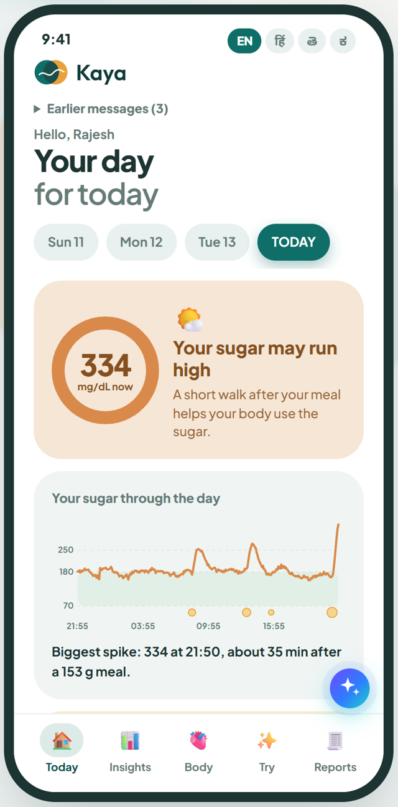
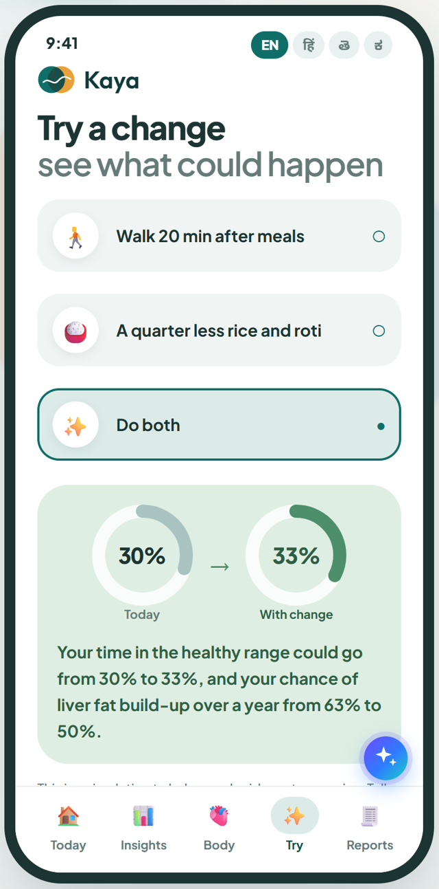
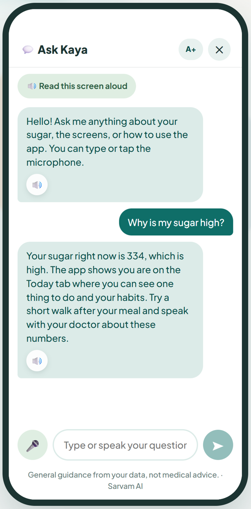
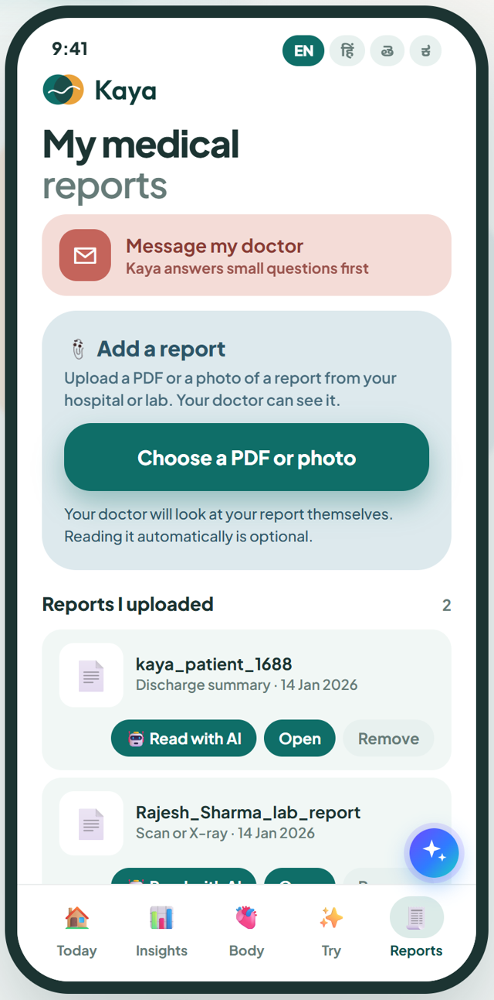

Stop diabetic kidney and eye failure before it starts
A digital twin that lets doctors watch every patient and act early.
1Problem
Japan has the policy and the data, but not the hands.
Why not hire more? Doctor overtime is capped.
India, same gap: ≈2 lakh new kidney failures a year (committee).
2Market potential
One product for doctors in two markets.
| Japan | India | |
|---|---|---|
| People with diabetes | 10M+ suspected, +10M at risk | ≈101M adults, +136M prediabetes |
| Who pays for dialysis | Insurers and the state | Mostly patients; the state for poor patients (PMNDP) |
| Paid digital diabetes market, 2024 | US$0.2–1.2B | US$0.34–0.58B |
Analyst estimates differ about 2×.
3Solution
One twin per patient. One live priority list for the doctor.
Doctors monitor, get alerts, read records and message patients. Prescribing is planned.
4Value proposition
Doctors use it; whoever saves from prevention pays.
- Flat software fee, no commission. No price quoted yet.
5Business model
Subscription: payers fund it, doctors use it, patients benefit.
6Competition
Nobody we found covers organ complications and the screening loop.
| Kaya 佳弥 | CureApp JP · lifestyle Rx apps | Welby JP · patient logging | Twin Health IN/US · metabolic twin | sugar.fit, BeatO, Fitterfly IN · glucose coaching | |
|---|---|---|---|---|---|
| Glucose forecast and coaching | |||||
| Kidney risk and eGFR path | |||||
| Eye risk with explanation | |||||
| Screening-gap and referral loop | |||||
| What-if on organ risk |
offered partial not found in our search (to be verified)
Why Kaya fits the criteria
For the patient: one next step, in plain language




One next step. A plain-language Today screen.
Try a change. See what a walk does to glucose and liver risk.
Ask Kaya. A chat and voice assistant in the patient's language. Medicine questions go to the doctor.
Add a report. The patient uploads a PDF or photo; the doctor sees it marked “not verified”.
Four languages. English, Hindi, Telugu, Kannada, with 日本語 planned.